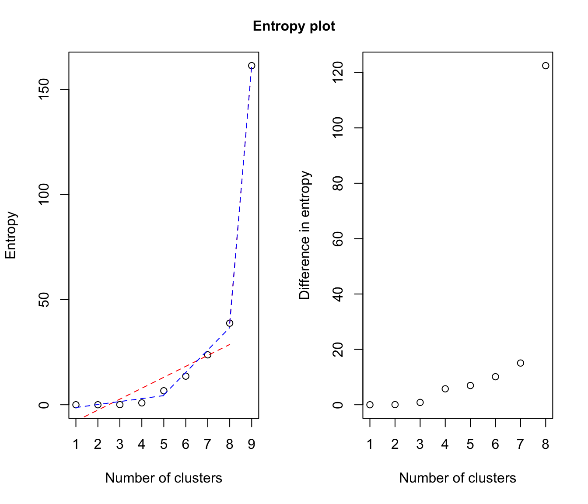
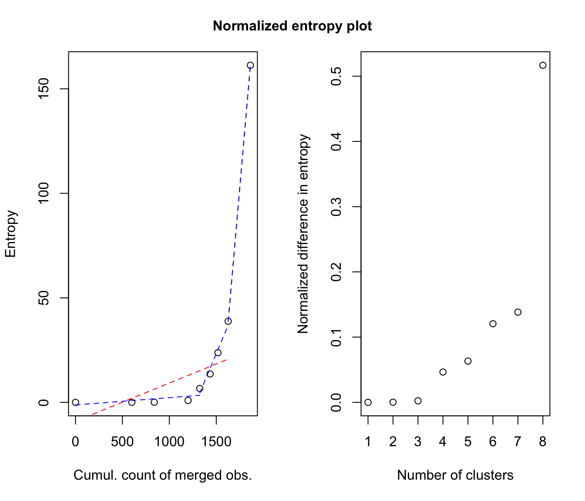

entPlot.RdPlot "entropy plots" to help select the number of classes from a hierarchy of combined clusterings.
entPlot(z, combiM, abc = c("standard", "normalized"), reg = 2, ...)A matrix whose [i,k]th entry is the probability that observation i in the data belongs to the kth class, for the initial solution (ie before any combining). Typically, the one returned by Mclust/BIC.
A list of "combining matrices" (as provided by clustCombi), ie combiM[[K]] is the matrix whose kth row contains only zeros, but in columns corresponding to the labels of the classes in the (K+1)-classes solution to be merged to get the K-classes combined solution. combiM must contain matrices from K = number of classes in z to one.
Choose one or more of: "standard", "normalized", to specify whether the number of observations involved in each combining step should be taken into account to scale the plots or not.
The number of parts of the piecewise linear regression for the entropy plots. Choose one or more of: 2 (for 1 change-point), 3 (for 2 change-points).
Other graphical arguments to be passed to the plot functions.
Please see the article cited in the references for more details. A clear elbow in the "entropy plot" should suggest the user to consider the corresponding number(s) of class(es).
if abc = "standard", plots the entropy against the number of clusters and the difference between the entropy of successive combined solutions against the number of clusters.
if abc = "normalized", plots the entropy against the cumulated number of observations involved in the successive combining steps and the difference between the entropy of successive combined solutions divided by the number of observations involved in the corresponding combining step against the number of clusters.
J.-P. Baudry, A. E. Raftery, G. Celeux, K. Lo and R. Gottardo (2010). Combining mixture components for clustering. Journal of Computational and Graphical Statistics, 19(2):332-353.
# \donttest{
data(Baudry_etal_2010_JCGS_examples)
# run Mclust to get the MclustOutput
output <- clustCombi(data = ex4.2, modelNames = "VII")
entPlot(output$MclustOutput$z, output$combiM, reg = c(2,3))


# legend: in red, the single-change-point piecewise linear regression;
# in blue, the two-change-point piecewise linear regression.
# }